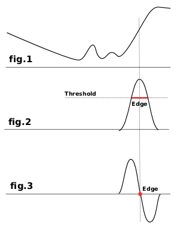

|

|
 |
| 7.8. Espalhar |

|
8.2. Diferença de Gaussianas |
Os filtros de detecção de borda procuram por bordas entre diferentes cores e dessa forma conseguem detectar o contorno de objetos.
Eles são usados para fazer seleções e para vários propósitos artisticos.
This category describes the following filters:

A maioria deles são baseados em métodos de cálculo de gradiente e dão linhas de bordas grossas. Veja a figura 1, que representa as variações da intensidade de cor. Na esquerda temos um pequeno gradiente de cor que não possui uma borda. Na direita temos uma rápida variação, no qual indica que é uma borda. Agora, nos deixe calcular o gradiente, a variação de velocidade, dessa borda: por exemplo, a primeira derivada (figura 2). Nós decidimos que uma borda é detectaeda quando o gradiente é maior que o valor de começo (a borda exata está no topo da curva, mas esse topo varia de acordo com as bordas). Na maioria do caso, o valor de começo está acima do topo e a borda é grossa.
A deteção de borda laplaciana usa a segunda derivada (figura 3). O topo da curva agora está no zero e é facilmente identificável. É por isso que o filtro de laplace gera uma borda fina, de apenas um pixel de largura. Mas essa derivada gera diversos zeros, correspondendo a pequenas trepidações, resultando em bordas falsas.
As vezes é necessário borrar um pouco a imagem antes de aplicar o filtro: isso alisa pequenas trepidações e previne falsas bordas.